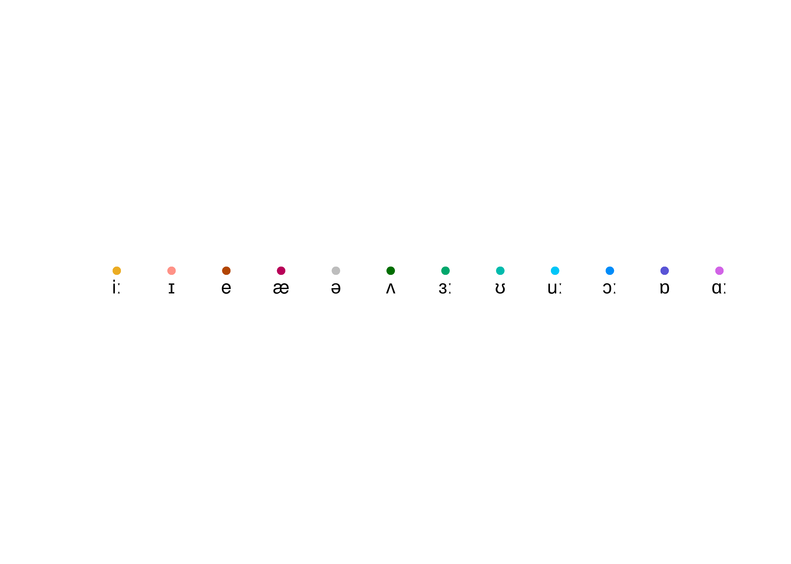

4 1-video-mBRP-o6Q85s/
This is an automatically generated report.
4.1 General data
Video title: The Christmas Broadcast, 1957
YouTube ID: mBRP-o6Q85s
Duration of recording:
Speaker: F
Sex: M
Palette used for vowels:

4.2 SPPAS-aligned data
Data aligned by SPPAS Bigi (2012).
4.2.1 General data
Total number of vowels collected: 1045
Total number of vowels collected (function words excluded): 526
4.3 P2FA-aligned data
Data aligned by P2FA Yuan and Liberman (2008).
This is an automatically generated report.
4.3.1 General data
Total number of vowels collected: 1071
Total number of vowels collected (function words excluded): 396
References
Bigi, B. 2012. “SPPAS: a tool for the phonetic segmentations of Speech.” Istanbul.
Deterding, David. 1997. “The Formants of Monophthong Vowels in Standard Southern British English Pronunciation.” Journal of the International Phonetic Association 27 (1-2): 47–55. https://doi.org/10.1017/s0025100300005417.
Hillenbrand, J., L. A. Getty, M. J. Clark, and K. Wheeler. 1995. “Acoustic Characteristics of American English Vowels.” The Journal of the Acoustical Society of America 97 (5): 3099–3111.
Yuan, J., and M. Liberman. 2008. “Speaker Identification on the SCOTUS Corpus.” Journal of the Acoustical Society of America, 123(5): 5687.